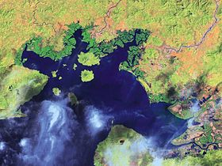

Manglares
Los manglares son un tipo de biomasa, formada por árboles muy tolerantes a la sal que ocupan la zona intermarial cercana a las desembocaduras de cursos de agua dulce de las costas de latitudes tropicales y subtropicales de la Tierra, incluyen estuarios y zonas costeras. Tienen una gran diversidad biológica con alta productividad, encontrándose muchas especies de aves como de peces, crustáceos, moluscos y otras.
Su nombre deriva de los árboles que los forman, los mangles, el vocablo mangle de donde se deriva mangrove (en alemán, francés e inglés) es originalmente guaraní[cita requerida] y significa árbol retorcido.
Los manglares de Honduras se encuentran en el Golfo de Fonseca, en los departamentos de Choluteca y Valle.
